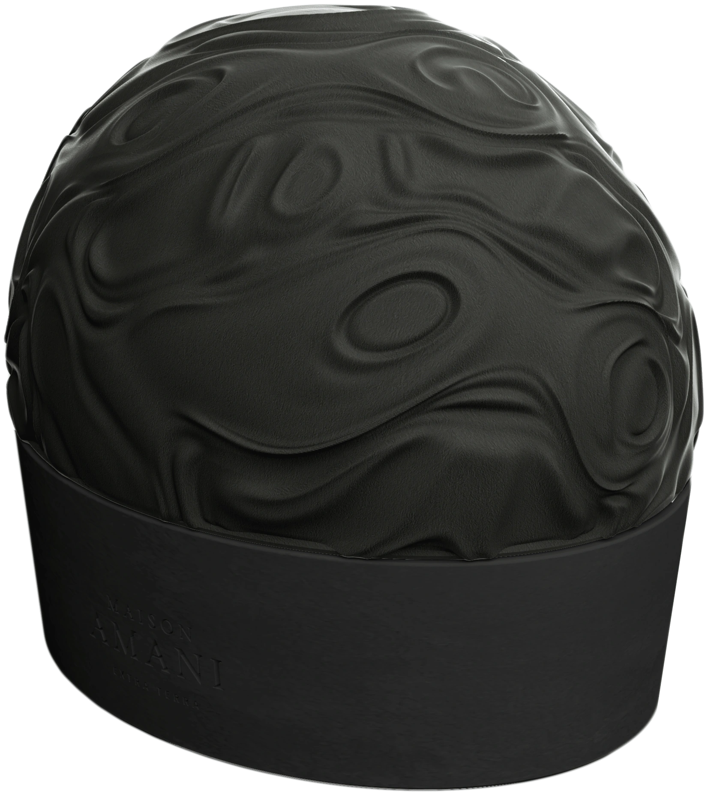
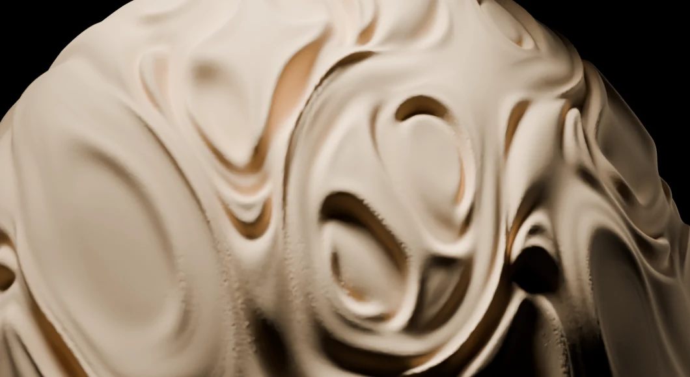
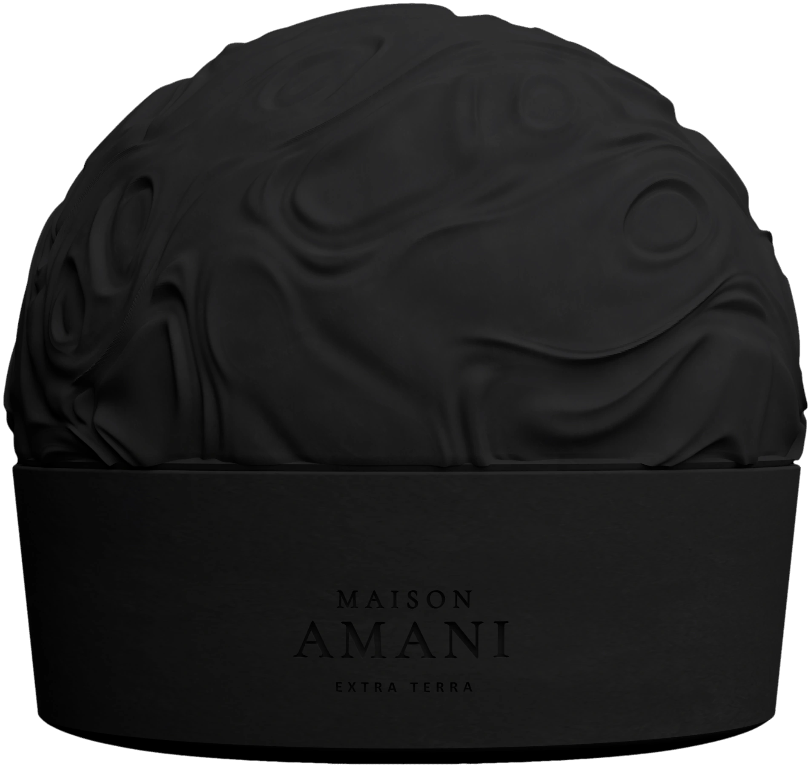
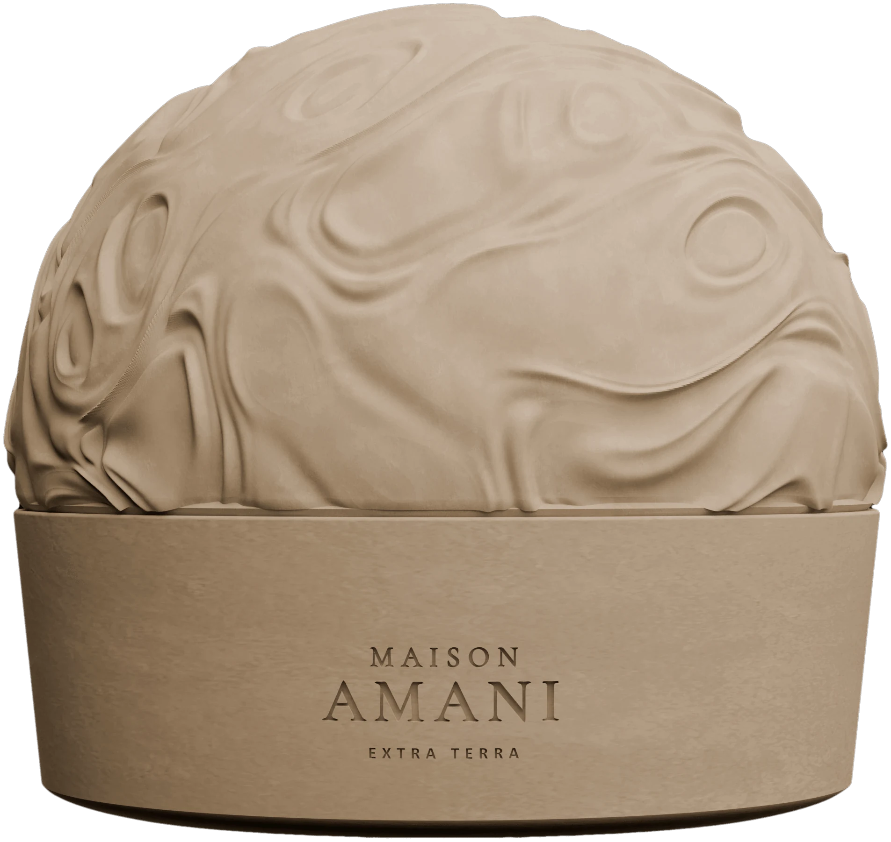
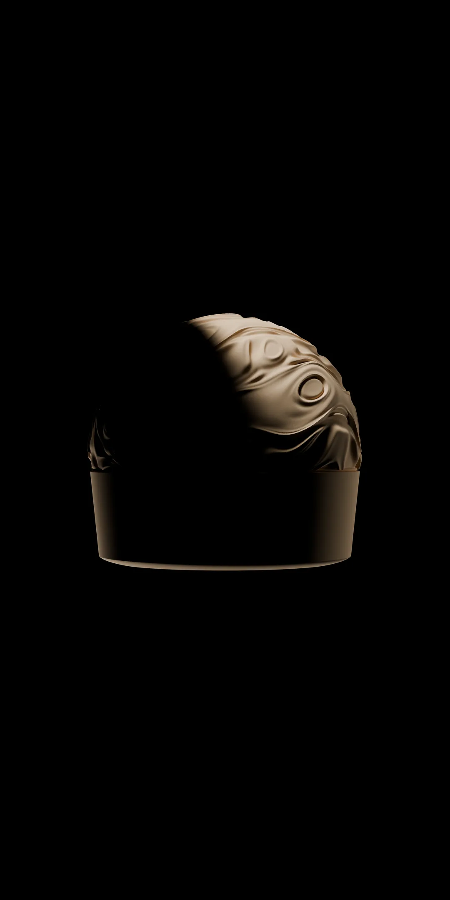

Before the light, there is the object.
001

Not from here.
A vessel for light and scent.

The rest is still sealed.


Night
Day
The vessel stays. The light changes.

We’ll write when it is lit.
Light, in form.
- Object
- 001
- Artist
- A collective
- Form
- Vessel
- Light
- Candle
- Scent
- Sealed
- Refill
- Yes
An object by an award‑winning collective
of multidisciplinary artists, designers and creatives.